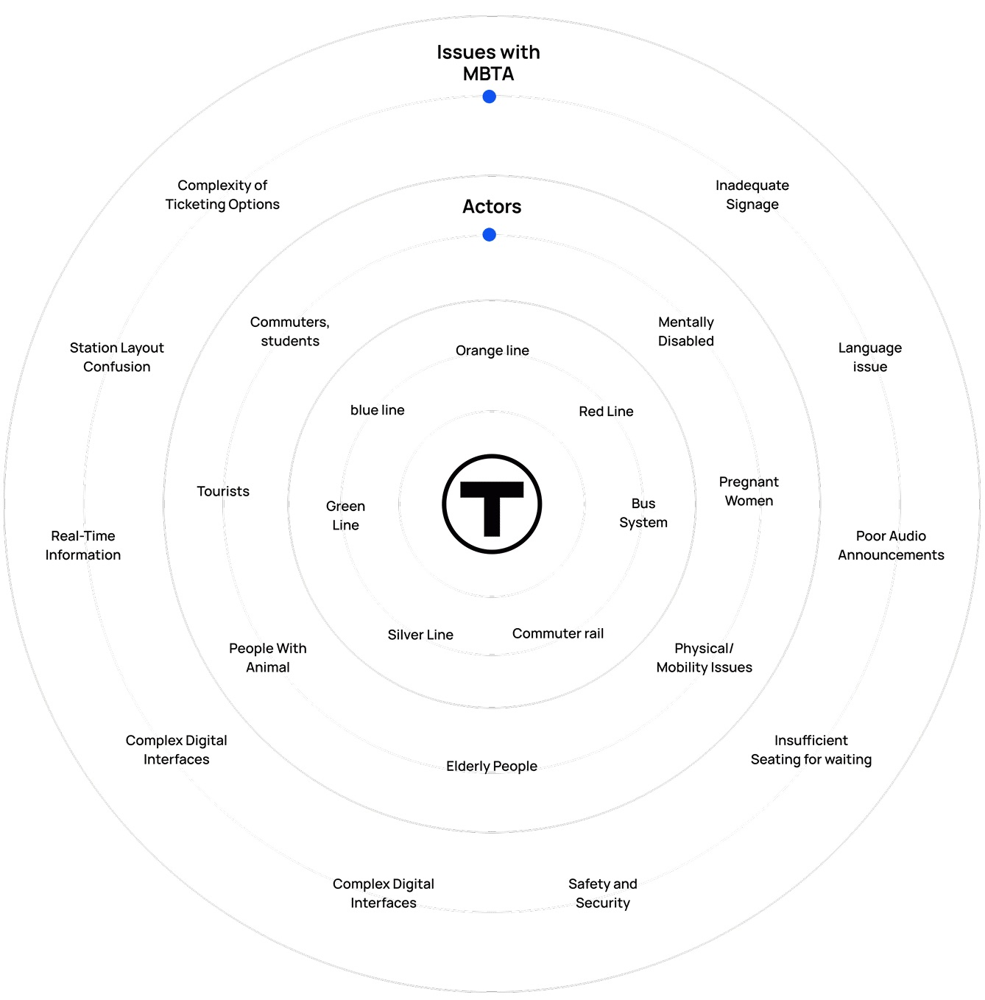
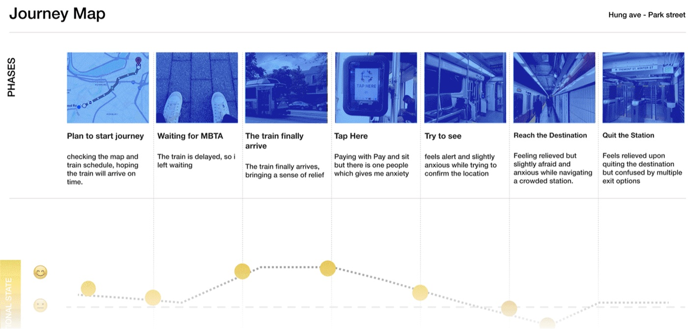
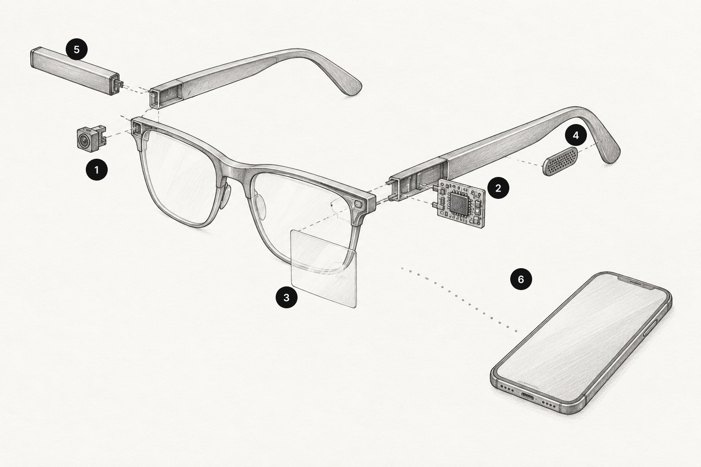
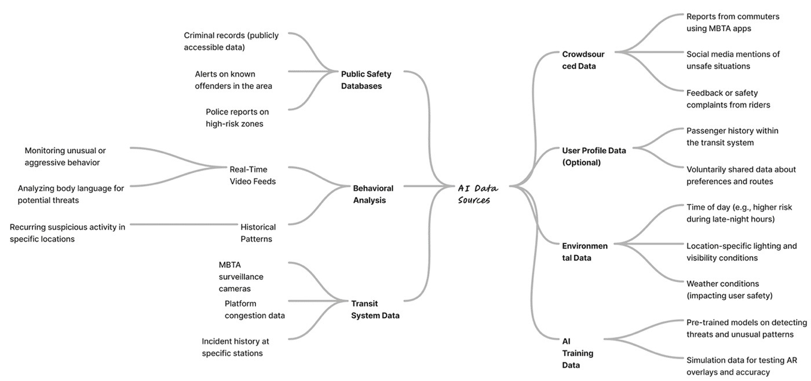
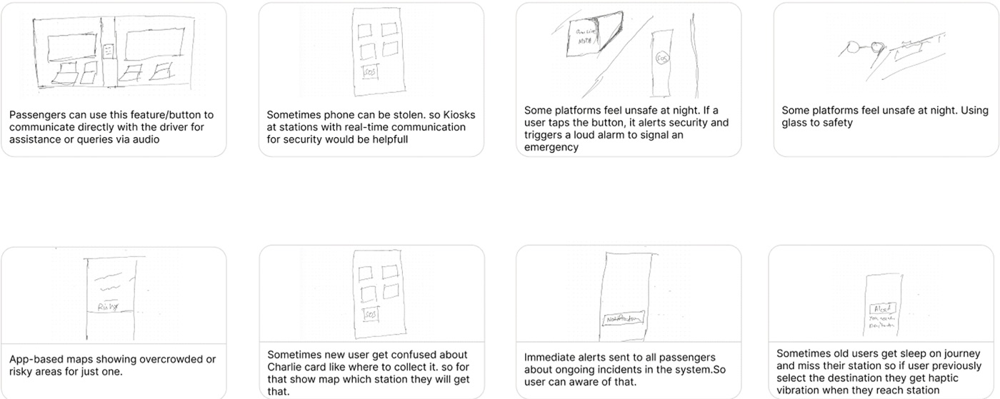
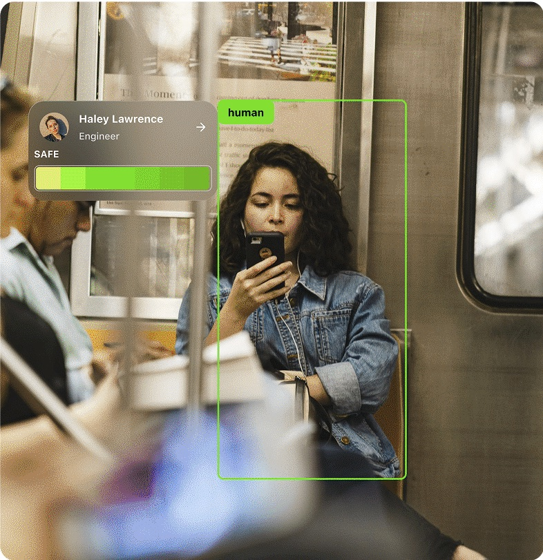
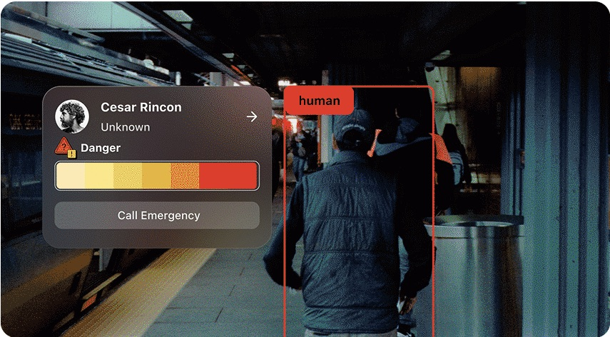
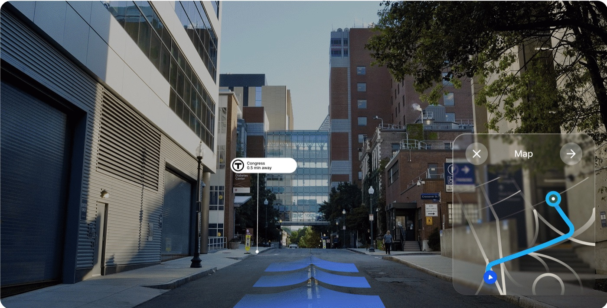
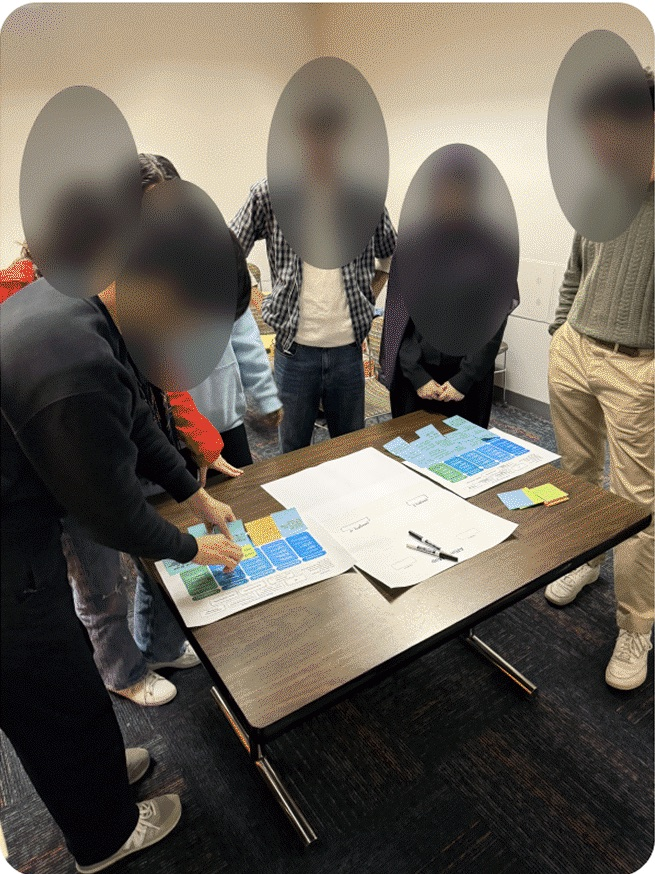

Computer vision & experience design · 2024
SafeVision
A computer vision design experiment for AR glasses that detects the people around a transit rider, reads their expressions, predicts how safe the situation is, and responds calmly.
Problem
58% of surveyed MBTA riders feel unsafe at night, with few tools to act when something feels wrong.
Approach
Research with riders, then a computer vision pipeline that reads faces and past data, delivered through a three state AR experience.
Outcome
An experimental system design and interactive prototype, safeguards for its riskiest assumptions, and a plan to build and evaluate the model.
How might computer vision in AR glasses help transit riders anticipate risk, without turning the people around them into suspects?
Riders on Boston’s MBTA describe feeling exposed at night: poorly lit platforms, few visible staff, and little they can do when a situation feels wrong. Harassment and crime on public transit are a documented problem in cities worldwide [1]. Existing apps help with schedules and routes, but not with how safe a journey feels.
SafeVision uses the camera in a pair of AR glasses to detect the people nearby, analyse their facial expressions in real time, and combine that with previous data to predict how safe the situation is. The prediction drives a calm interface that tells the rider when to relax and when to act.
The project covers the full loop: research with riders, the design of the computer vision pipeline, and the experience built on top of it. The pipeline is specified as a system design, and the models are not trained yet.
I combined four methods to understand when riders feel unsafe, and what they already do about it.
Territory map
Secondary research into the MBTA, mapped as rider groups (commuters, tourists, elderly passengers, people with disabilities) and the issues around them, such as poor signage, missing live information and safety concerns.

Survey
50 respondents recruited on Reddit, asked how safe they feel on the MBTA, especially at night, and which tools they rely on.
Interviews
Six semi structured interviews with more than 25 questions, covering travel patterns, tools and moments of feeling unsafe.
“When I’m on the train late at night, I keep checking my surroundings. I just wish I knew who’s around me, it would make me feel calmer.”Participant 4
“If something feels off, I don’t always know what to do. I want to feel like I have some control before things get serious.”Participant 2
“I don’t want the system to make me afraid of people. I want it to help me stay calm and safe, like it’s watching out for me quietly.”Participant 3
Journey map
A real trip from Hung Ave to Park Street. Anxiety peaked while waiting for a delayed train, when a stranger sat close by, and when searching for the right exit in a crowded station.

Limits of this research. The survey is a convenience sample from one online community, and six interviews point to patterns rather than prove them. I treat these findings as direction for design, not as measurement.
- Unsafe feelings cluster in waiting moments. Delays, empty platforms and late night stops mattered more than time on the train itself.
- Riders want awareness, not alarm. People wished they understood their surroundings, but did not want a system that makes them fear other passengers.
- Control matters before a crisis. Riders felt most helpless when they sensed something was off but had no clear, low effort way to act.
- Existing tools stop at logistics. Transit and Google Maps answer when and where, but not how safe a journey will feel.
The insights point to a tension between awareness and fear. I turned them into four principles that shaped both the model outputs and the interface.
Calm over alarm
The default state should reassure. Alerts are rare, and the interface stays quiet when nothing is wrong.
Control before escalation
Give riders clear options early, before a situation becomes an emergency.
Show your confidence
Every prediction comes with how sure the system is, so riders can weigh it rather than obey it.
Heads up, hands free
Keep riders looking at their surroundings, not down at a phone.
What is inside the glasses
Everything SafeVision needs fits into an ordinary looking frame and the rider’s phone. The glasses do the seeing and thinking; the phone holds the station data and makes calls.

- CameraSees the people nearby. Frames are read and deleted within seconds.
- AI chipRuns the detection, expression and safety models on the glasses, with no internet needed.
- Lens displayDraws the meter, alerts and arrows in the rider’s view.
- SpeakerGives short voice prompts when the rider should not look away.
- BatteryPowers a night’s trip, sitting in the arm of the frame.
- PhoneHolds the downloaded station data and handles calls and location sharing.
The loop in one picture
The loop runs all the time. The glasses see the scene, think about it on the device, and decide whether anything has changed. Only then do they alert the rider: a signal in the lens and a buzz on the phone, where one tap calls or shares location.

The pipeline
SafeVision runs as a five stage computer vision pipeline. Each stage feeds the next, and only the final result reaches the rider.
- 1CaptureCamera on the frame
- 2Detect and trackPeople and faces
- 3ExpressionTension or calm
- 4Previous dataPlace, time, reports
- 5Safety scoreScore plus confidence
- Shield or DangerWhat the rider sees
- CaptureThe glasses’ forward camera streams video, processed on the device so raw footage never leaves the glasses.
- Detect and trackA detection model finds people and faces in each frame and tracks them as they move through the carriage or platform.
- Read the current expressionAn expression model estimates signs of tension, agitation or calm from each tracked face, updated continuously.
- Add previous dataThe system combines the live reading with past data: incident history at that station, reports from other riders, time of day and lighting, and records linked to a person where available.
- Predict a safety levelA fusion model turns these signals into a safety score with a confidence level, which decides whether the rider sees Shield or Danger.
How the system decides
The step from a score to an alert is the most important decision in the design, so it follows an explicit rule rather than a single number crossing a line. Danger appears only when all three conditions are true at once:
If the score is low but confidence is not, the glasses stay in Shield and keep watching. The system never shows a guess. Getting back to Shield is deliberately harder than leaving it: the score has to rise above 0.55 and stay there for 20 seconds, or the rider dismisses the alert. That gap stops the meter from flickering between states when a reading hovers near the line.
In the train scene below, the score drops from 0.72 to 0.41, which is not enough. It then falls to 0.31 with 0.86 confidence and holds for six seconds, so Danger appears.
These are planned starting values, not measured results. They will be tuned against false alarm and miss rates in the evaluation described in Next steps.
How it works on one trip home
To make the pipeline concrete, here is how it plays out on a single late night journey. Each sketch follows the same order: what the glasses take in, what the system works out, and what the rider actually sees.
1. Waiting on the platform: Shield

It is late and the platform is half lit. The camera on the frame is already streaming, but the footage never leaves the glasses. The detection model finds two people further down the platform and keeps tracking them as they shift and check their phones. Their expressions read as calm, the station has no recent reports, and the fusion model returns a high safety score with high confidence.
So the rider sees almost nothing: a small green Safe meter at the edge of their view. There are no names, no labels on strangers and no score for each person. The point of Shield is to give the rider permission to stop scanning the room.
2. On the train: Danger
![Rough sketch inside a subway carriage. A rider on the left wears camera glasses; a red cone runs to a standing passenger with clenched fists inside a dashed red box. A red panel at the top right offers three buttons: Alert staff, Share and Call 911. Callouts: 1, the expression model sees tension that holds for several seconds; 2, it adds context such as the late hour and two recent rider reports at this stop; 3, the score drops below the threshold with high confidence, so one tap actions appear and the rider decides.](images/how-danger.jpg)
A passenger standing by the doors becomes agitated. One tense frame is not enough to change anything, so the expression model waits until the reading holds for several seconds. The system then weighs it against context: it is 11:40 pm, and riders have reported two incidents at this stop in the past month.
Only when the score falls below the threshold, and the model is confident, does the meter turn red. The panel offers three one tap actions: alert staff, share location, or call 911. Nothing happens until the rider chooses, and a single dismissal returns them to Shield. The design keeps the rider in control and avoids treating the other passenger as a verdict.
3. Walking out: Navigate

The rider leaves the train and starts Navigate, or Danger hands off to it after an alert. The route planner draws on the same previous data layer as the safety score: streetlight coverage, incident reports and time of day. Instead of the shortest path, it picks the one that stays on lit, busier blocks, even when that adds a minute.
Directions are drawn onto the sidewalk as arrows, with a small map and the time to the station, so the rider keeps their head up and their eyes on the street rather than on a phone.
Where the data comes from
The previous data layer draws on seven kinds of sources, from public safety databases and transit system records to crowdsourced reports and environmental data.

I explored twenty early ideas through sketching, from panic buttons and SOS kiosks to crowd maps and haptic stop alerts. Using the Three Horizons framework, I placed them on a timeline: fixes for today, app features for the near term, and AR glasses as the longer term vision this project focuses on.

The experience is built around three states. The transitions between them matter as much as the states themselves.
Default while the safety score is high. A quiet green meter signals that nothing needs attention.
Triggered when the score drops below a threshold with high confidence. Offers one tap actions, and the rider decides.
Guides the rider to safety or their destination, with directions drawn onto the street.
Riders can dismiss Danger at any time to return to Shield, and can start Navigate on demand.
Shield: the calm default
While the pipeline reads the carriage as safe, the glasses show only a quiet green meter over the people nearby, so riders can relax without constantly scanning.

Danger: escalation with control
When the model detects rising tension and its confidence is high, the panel shifts to a warm red meter and offers one tap actions: call emergency services, alert staff, or share location. The rider chooses what happens next, in line with control before escalation.

Navigate: safer routes, heads up
Route guidance is drawn onto the street, with the nearest station and a small map, so riders keep their eyes on their surroundings.


In a critique session, participants said feeling safe also depends on understanding how others are feeling. They described moments when someone nearby seemed tense or distracted, and not knowing whether to engage or give space.
This led to an Anxiety Level output from the expression model, shown at the top of this page, meant to help riders judge when to talk and when to step back.
It also raised the hardest question in the project, which the next section takes on.
A system that reads strangers’ faces and predicts how safe they are carries real risks. I treated them as design requirements, not afterthoughts.
Expressions are a noisy signal
Psychology research questions whether facial movements reliably reveal inner states [2], and using such inferences to judge people raises ethical problems of its own [3]. A tense face can mean worry, cold or tiredness. So the expression reading is never used alone: it is weighed with context and history, and the interface always shows the model’s confidence.
Models can be biased
Face analysis systems have been shown to perform unevenly across skin tones and genders [4], and emotion recognition tools have been found to read more negative emotions in Black faces than in white faces [5]. Historical records carry bias too: they can over represent groups that are already over policed [6]. Before deployment, the models would need testing for accuracy and false alarm rates across demographic groups.
Bystanders never agreed to this
The people being analysed are not the ones wearing the glasses. Research with bystanders of AR glasses shows real concern about being recorded, and a wish for ways to opt out [7]. Early mockups showed names and occupations, which exposes far more than a rider needs to feel safe.
When the system is wrong
Any model like this will make mistakes, so the design plans for both kinds.
False alarm
Someone laughing loudly, arguing on a phone call, or just cold and tired can read as tense. The cost is real: a rider who is told to worry about a harmless stranger learns to fear people, and starts ignoring alerts.
Missed danger
A threat can look calm on the surface, or happen outside the camera’s view. The glasses must never make a rider feel so safe that they stop trusting their own instincts.
How the design responds:
- A false alarm costs one tap. Danger only suggests actions and never takes them, so the worst case is a glance and a dismissal that returns the rider to Shield.
- Riders can mark an alert as wrong. That note stays on the device and helps tune the thresholds in future studies, without storing anyone’s face.
- The rule leans toward staying quiet. High confidence and a five second hold mean the system will miss some mild moments rather than raise alarms about harmless people.
- Shield is never a promise. It reads as “nothing unusual detected”, not “you are safe”, and riders can open the one tap actions at any time without waiting for an alert.
Safeguards in the design
- On device processing, with no storage of strangers’ faces or footage.
- No identity on screen: riders see a safety level, not who someone is.
- Confidence thresholds, so Danger only appears when the model is sure.
- The rider always decides. The system suggests, and never acts on its own.
- Bias audits before release, and after every model update.
The next phase is to build and evaluate the pipeline, and test the experience with riders.
- Prototype the pipeline with existing open source detection and expression models on recorded footage from consenting participants.
- Evaluate the model on precision, recall and false alarm rate for Danger, plus latency on the glasses themselves.
- Test for fairness by comparing error rates across demographic groups.
- Wizard of Oz study: simulate the three states in a staged station setting, with a researcher triggering transitions, and measure perceived safety and anxiety before and after.
- Bystander interviews: ask riders how they would feel being seen through someone else’s glasses.
- A broader sample: recruit beyond one online community, including riders with disabilities and frequent night travellers.
Safety is not only about protection. It is also about emotional awareness and social comfort: people want to understand the situation around them, not to be told whom to fear. Designing the computer vision pipeline taught me that the hardest decisions sit between the model and the person: what to show, how confident to be, and when to stay quiet.
That is the question I want to keep pursuing: how can computer vision systems support people’s sense of safety without shifting the risk onto others?
References
- Ceccato, V., & Loukaitou-Sideris, A. (2020). Transit crime and sexual violence in cities: International evidence and prevention. Routledge. doi.org/10.4324/9780429290244
- Barrett, L. F., Adolphs, R., Marsella, S., Martinez, A. M., & Pollak, S. D. (2019). Emotional expressions reconsidered: Challenges to inferring emotion from human facial movements. Psychological Science in the Public Interest, 20(1), 1-68. doi.org/10.1177/1529100619832930
- Stark, L., & Hoey, J. (2021). The ethics of emotion in artificial intelligence systems. Proceedings of the 2021 ACM Conference on Fairness, Accountability, and Transparency, 782-793. doi.org/10.1145/3442188.3445939
- Buolamwini, J., & Gebru, T. (2018). Gender shades: Intersectional accuracy disparities in commercial gender classification. Proceedings of the Conference on Fairness, Accountability and Transparency, 77-91. proceedings.mlr.press/v81/buolamwini18a
- Rhue, L. (2018). Racial influence on automated perceptions of emotions. SSRN. doi.org/10.2139/ssrn.3281765
- Richardson, R., Schultz, J. M., & Crawford, K. (2019). Dirty data, bad predictions: How civil rights violations impact police data, predictive policing systems, and justice. New York University Law Review Online. nyulawreview.org
- Denning, T., Dehlawi, Z., & Kohno, T. (2014). In situ with bystanders of augmented reality glasses: Perspectives on recording and privacy-mediating technologies. Proceedings of the SIGCHI Conference on Human Factors in Computing Systems, 2377-2386. doi.org/10.1145/2556288.2557352